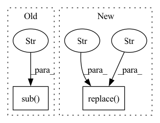

Pattern ID :6940
Before Change
else:
result = fuzzy_find([t], text)
if len(result) == 0:
result = fuzzy_find([re.sub( tokenizer.unk_token, "" , t) ], text)
if len(result) == 0:
return None // cannot find exact match
_, _, start, end = result[0]After Change
if x != "<pad>":
offset += len(x)
end_offset.append(offset)
text = "".join(tokenized_text).replace("<pad>" , "" )
for span in spans:
t = "".join(tokenizer.tokenize(span)).replace("<pad>", "")
start = text.find(t)
if start >= 0:In pattern: SUPERPATTERN
Frequency: 3
Non-data size: 2
Instances Fragment ID: 23276929
Project Name: sleepychord/cogltx
Commit Name: 2b6ef8be06f665152eeca9e645b0550244c60027
Time: 2020-03-13
Author: dm_thu@qq.com
File Name: hotpotqa/cogqa_utils.py
M Class Name: AnonimousClass
N Class Name: AnonimousClass
M Method Name: find_start_end_after_tokenized(3)
N Method Name: find_start_end_after_tokenized(3)
M Parent Class:
N Parent Class:
M File Name: hotpotqa/cogqa_utils.py
N File Name: hotpotqa/cogqa_utils.py
M Start Line: 124
M End Line: 141
N Start Line: 125
N End Line: 142
Before Change
import string, re
def underscorify(value):
no_punctuation = str(value.translate(str.maketrans("", "", string.punctuation)))
spaces_to_one_underline = re.sub(r"[-\s]+" , "_", no_punctuation) .strip("-_") // strip gets rid of leading or trailing underscores
return spaces_to_one_underline
// tensor helpers
After Change
def underscorify(text):
no_punctuation = text.replace("." , "" )
spaces_to_underline = no_punctuation.replace(" ", "_")
no_lead_trailing_underscores = spaces_to_underline.strip("-_")
no_commas = no_lead_trailing_underscores.replace(",", "")
return no_commas Fragment ID: 23276906
Project Name: lucidrains/big-sleep
Commit Name: 20e4d9d99cb16d1c6d8d6daa50ebbf44ea169078
Time: 2021-03-12
Author: antonwiehe@gmail.com
File Name: big_sleep/big_sleep.py
M Class Name: AnonimousClass
N Class Name: AnonimousClass
M Method Name: underscorify(1)
N Method Name: underscorify(1)
M Parent Class:
N Parent Class:
M File Name: big_sleep/big_sleep.py
N File Name: big_sleep/big_sleep.py
M Start Line: 65
M End Line: 67
N Start Line: 65
N End Line: 69
Before Change
phones = phones.replace(replacement[0], replacement[1])
phones = re.sub("~+", "~", phones)
phones = re.sub(r"\s+", " ", phones)
phones = re.sub(r"\s+" , "", phones) // TODO remove this line, once word boundaries are properly implemented
phones = phones.lstrip("~").rstrip("~")
if self.add_silence_to_end:After Change
phones = phones.replace(replacement[0], replacement[1])
phones = re.sub("~+", "~", phones)
phones = re.sub(r"\s+", " ", phones)
phones = phones.replace(" " , "" ) // TODO remove this line, once word boundaries are properly implemented
phones = phones.lstrip("~").rstrip("~")
if self.add_silence_to_end: Fragment ID: 23276905
Project Name: digitalphonetics/ims-toucan
Commit Name: 7900ac1ea0b64b58b5de877cc1b95d3c5e1e47a9
Time: 2022-05-04
Author: florian.lux@ims.uni-stuttgart.de
File Name: Preprocessing/TextFrontend.py
M Class Name: ArticulatoryCombinedTextFrontend
N Class Name: ArticulatoryCombinedTextFrontend
M Method Name: get_phone_string(4)
N Method Name: get_phone_string(4)
M Parent Class:
N Parent Class:
M File Name: Preprocessing/TextFrontend.py
N File Name: Preprocessing/TextFrontend.py
M Start Line: 235
M End Line: 236
N Start Line: 200
N End Line: 246